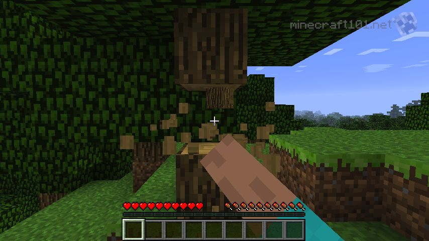
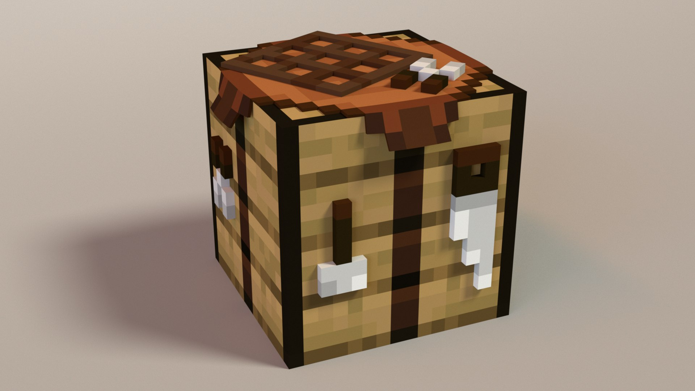
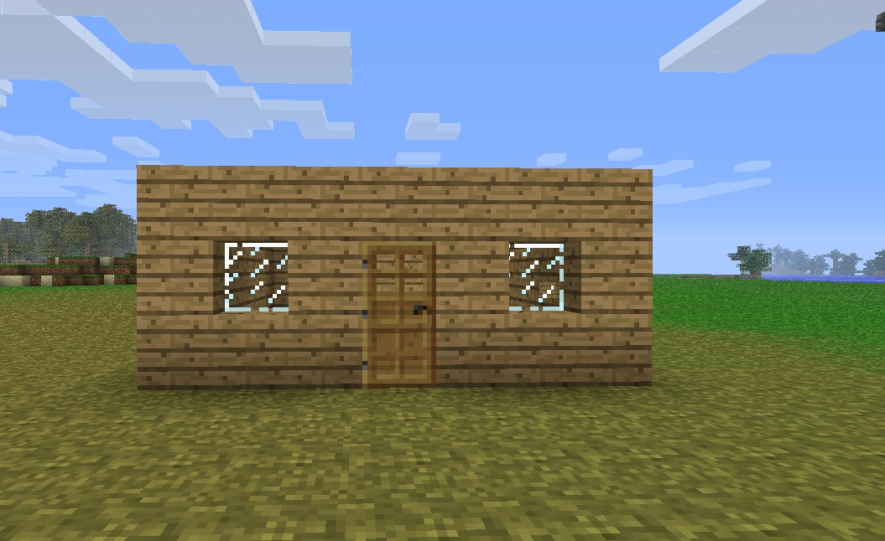
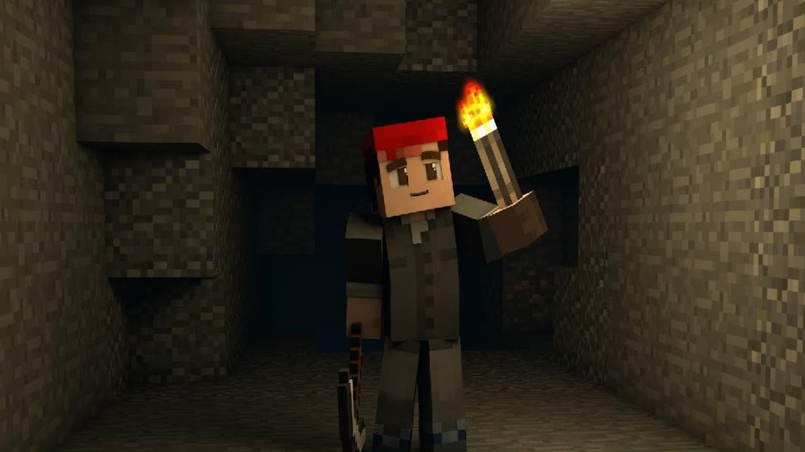

O início
Assim que o jogo começar, procure árvores e colete madeira. Esse será o primeiro passo para criar ferramentas básicas e uma bancada de trabalho.
A madeira pode ser usada para:
- Construir uma bancada de trabalho
- Criar ferramentas básicas
- Montar um abrigo simples
Construindo a bancada
Com a madeira coletada, abra seu inventário e transforme os troncos em tábuas. Use quatro tábuas para criar uma bancada de trabalho (crafting table).
Ferramentas básicas
Com a bancada, você pode criar ferramentas como:
- Picareta - para minerar pedra e carvão
- Machado - para cortar madeira mais rápido
- Espada - para se defender de inimigos
Construindo um abrigo
Antes que escureça, use blocos de terra ou madeira para fazer um abrigo simples. Isso te protegerá dos zumbis, esqueletos e outras criaturas da noite.
Iluminação
Se encontrar carvão ou troncos para fazer carvão vegetal, crie tochas. Elas iluminam o ambiente e evitam que monstros apareçam perto do seu abrigo.
